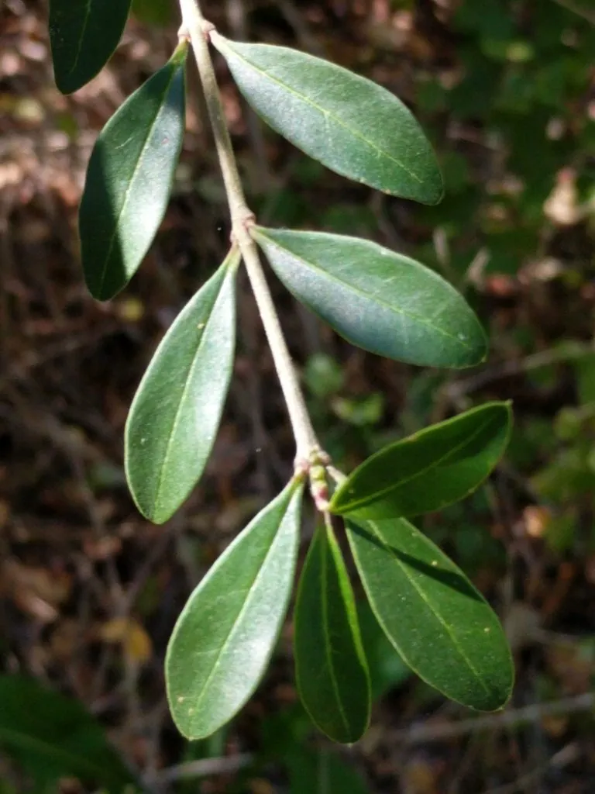

灌木与花木 · 植物界
小叶女贞 Ligustrum quihoui

木犀科落叶或半常绿灌木，夏季开白色圆锥花序，耐修剪、抗污染，是城市绿篱与造型的常用优良树种。
- 分类
- 门被子植物门纲木兰纲目唇形目科木犀科属女贞属
- 栖息环境
- 山坡灌丛、溪边与城市绿地，喜光也耐半阴
- 地理分布
- 中国华北、华东、华中至西南各地
- 保护级别
- 暂无评估；中国未列入国家重点保护野生植物名录
物种志
小叶女贞为木犀科女贞属落叶或半常绿灌木，高 1–3 米，枝条细密，幼枝被短柔毛。叶对生，椭圆形至倒卵形，全缘，表面深绿色。圆锥花序顶生，花小，白色，香气浓郁，花期 5–7 月；果实为核果，椭圆形，成熟时紫黑色，果期 9–11 月。
小叶女贞原产中国华北、华东、华中至西南各地，生于山坡灌丛与溪边。它喜光，也耐半阴，耐寒、耐旱，对土壤要求不严，抗污染能力强。枝叶细密、耐修剪，是城市绿篱、造型与道路绿化的常用树种；也可作嫁接女贞的砧木。栽培以扦插和播种繁殖为主，需定期修剪保持株形，并注意防治介壳虫与白粉病，保持通风透光。
形态与习性
- 株高1–3 米，枝条细密
- 花期5–7 月，白色圆锥花序
- 果期9–11 月，核果紫黑色
- 光照喜光，也耐半阴
- 水分耐旱，忌积水
- 土壤对土壤要求不严
- 主要用途城市绿篱、造型与砧木
趣味知识
- 小叶女贞枝叶细密，是城市绿篱和造型最常用的树种之一。
- 它抗污染能力强，适合种在道路两侧和厂区。
- 夏季开白色圆锥花序，花香浓郁，是蜜源植物。
- 小叶女贞也常作嫁接女贞的砧木。